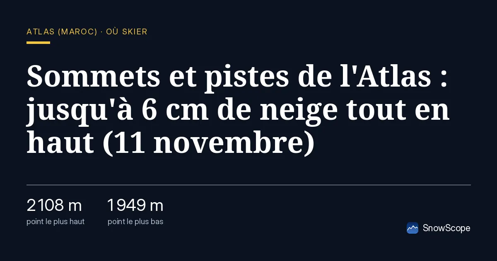

Sommets et pistes de l'Atlas : jusqu'à 6 cm de neige tout en haut (11 novembre)
L'Atlas sèche rapidement. Il y a deux jours, 40 km² était enneigé ; aujourd'hui seulement 20 km², et d'ici le 14 novembre il n'en restera que 10 km². C'est ainsi que fonctionnent les hautes montagnes sèches en début d'hiver : la neige ne tient que sur les sommets, et les vallées restent dénudées jusqu'à l'arrivée d'une tempête plus importante.
Consultez les prévisions neige en temps réel pour Habri sur l'application SnowScopeHauteurs de neige, alertes poudreuse et carte 3D, gratuitement.
Où se trouve la neige maintenant
Les trois stations de ski de l'Atlas n'ont pas de neige sur leurs pistes aujourd'hui. Habri (sommet à 2 108 m), Michlifen (2 070 m) et Oukaïmeden (3 258 m) sont tous dépourvus de couverture. La neige tombée plus tôt a fondu au-delà de 4 000 m d'altitude — bien plus haut que n'importe quel remontée.
Environ 6 cm se trouvent uniquement sur les plus hauts sommets, répartis sur à peu près 20 km² de terrain. C'est suffisant pour voir les crêtes blanches de loin, mais pas assez pour skier. Les montagnes semblent dénudées depuis le bas.
| Station | Hauteur de neige | Neige fraîche, 72 h | Attendu, jours suivants | Sommet |
|---|---|---|---|---|
| Habri | 0 cm | 0 cm | 0 cm | 2 108 m |
| Michlifen | 0 cm | 0 cm | 0 cm | 2 070 m |
| Oukaïmeden | 0 cm | 0 cm | 0 cm | 3 258 m |

Pourquoi l'altitude compte ici
Dans l'Atlas, tous les 100 mètres d'altitude changent la période où la neige tiendra. Le niveau de congélation se situe aujourd'hui entre 4 220 m et 4 580 m à Michlifen, et entre 4 250 m et 4 490 m à Oukaïmeden. Cela signifie que la pluie ou la neige mouillée tombent sur toutes les pistes que ces stations peuvent proposer.
Oukaïmeden a un avantage : son sommet atteint 3 258 m, 1 150 m plus haut qu'Habri. Quand la prochaine tempête arrivera et que le niveau de congélation baissera, Oukaïmeden captiera la neige en premier. Habri et Michlifen auront besoin d'un système beaucoup plus froid — un qui pousse la congélation à 2 000 m ou moins — pour devenir blancs.
Ce que les prochains jours nous réservent
Jusqu'au 14 novembre, la prévision n'annonce pas de neige fraîche dans aucune station. La zone blanche rétrécira de 20 km² aujourd'hui à 10 km² à la mi-novembre au fur et à mesure que les hauts sommets perdent leur couverture. Aucune neige ne devrait atteindre les pistes de ski dans les trois prochains jours.
La carte ne prédit pas quand la prochaine tempête arrivera, seulement que la couverture de neige disparaîtra. Dans ces montagnes, c'est le schéma : des semaines d'air sec entrecoupées de rafales brèves et intenses. L'attente longue recommence, comme presque tous les ans avant décembre.
Comment cela se compare avec les hivers précédents
À 1 970 m près de Michlifen, la profondeur habituelle à cette date sur 46 hivers passés était 0 cm. Aux stations intermédiaires d'Oukaïmeden (2 929 m), la normale est également 0 cm. Un début dénudé n'est pas inhabituel pour l'Atlas en novembre.
Cela ne signifie pas que la saison sera faible. L'Atlas reçoit la majorité de sa neige lors de quelques grandes tempêtes entre décembre et février. Beaucoup d'hivers restent secs jusqu'à la nouvelle année. Selon les chiffres, cette période est typique d'une période sèche, l'enthousiasme précoce serait donc déplacé.
Ce qui compte si vous prévoyez un voyage
Avant de réserver un séjour, consultez le site de chaque station pour connaître les dates d'ouverture des remontées et le statut actuel. SnowScope montre ce qui se trouve au sol, mais pas quelles remontées fonctionnent. La neige précoce ne signifie pas que la station a ouvert.
Si vous êtes en montagne quand la neige fraîche arrive, restez sur les pistes damées. La couverture de début de saison est fine, et les rochers ou l'herbe se cachent juste en dessous. La prévision peut changer en quelques jours : consultez la carte à nouveau le matin avant de partir. Configurez une alerte poudreuse dans l'appli SnowScope pour savoir quand la vraie neige atteint les pistes.
Le tableau plus large
L'Atlas suit un schéma de saison sèche. Novembre et début décembre sont souvent dénudés. La neige fiable arrive en janvier, souvent abondante et durable. Pour l'instant, la patience est la bonne stratégie.
Surveillez d'abord Oukaïmeden quand les tempêtes approchent ; son altitude lui donne la première chance de conserver la neige sèche. Quand les conditions changeront, la carte SnowScope le montrera. Pour les skieurs prévoyant un séjour hivernal dans l'Atlas, la vraie saison est devant nous.
Conseils aux skieurs
- Consultez le site de la station pour les dates d'ouverture des remontées avant de voyager. SnowScope montre la neige au sol, pas si la station est ouverte.
- La neige de début de saison est fine et peut cacher rochers ou végétation. Skiez uniquement sur les pistes ouvertes et damées jusqu'à ce que la base s'épaississe.
- Surveillez d'abord Oukaïmeden quand une tempête arrive ; son altitude (3 258 m) lui donne l'avantage sur Habri (2 108 m) et Michlifen (2 070 m).
- Les prévisions changent en quelques jours. Consultez la carte à nouveau le matin avant de prévoir votre voyage.
- Configurez une alerte poudreuse dans l'appli SnowScope pour savoir quand la neige fraîche atteint les pistes de ski.
À propos de ces chiffres
Les hauteurs de neige des stations sont la neige la plus épaisse sur le haut du domaine à la date indiquée ; ce sont des estimations pour une zone, pas une mesure en un point. Les prévisions peuvent changer. Consultez toujours le bulletin d'avalanche officiel avant le hors-piste.
Citer ce bulletin
Pour la recherche, l'enseignement ou la presse : chiffres et graphiques réutilisables librement sous CC BY 4.0 avec cette citation.
SnowScope (2026), Sommets et pistes de l'Atlas : jusqu'à 6 cm de neige tout en haut (11 novembre), https://snowscope.app/blog/fr/2026/11/atlas-morocco-atlas-snow-check-11-november-2026.html, consulté le 2026-11-11
SnowScope (Atlas Labs). (2026, November 11). Sommets et pistes de l'Atlas : jusqu'à 6 cm de neige tout en haut (11 novembre). SnowScope snow reports. https://snowscope.app/blog/fr/2026/11/atlas-morocco-atlas-snow-check-11-november-2026.html
BibTeX
@misc{snowscope2026atlasmoroccoatlassnowche,
author = {{SnowScope (Atlas Labs)}},
title = {Sommets et pistes de l'Atlas : jusqu'à 6 cm de neige tout en haut (11 novembre)},
year = {2026},
month = nov,
howpublished = {\url{https://snowscope.app/blog/fr/2026/11/atlas-morocco-atlas-snow-check-11-november-2026.html}},
note = {Published 2026-11-11 18:44 UTC; accessed 2026-11-11}
}· CC BY 4.0 · Méthodes, données et outils →
Habri : neige et température selon l'altitude, cet hiver vs l'hiver dernier (outils) →
Suivre Habri
Gratuit : un message quand la neige arrive, et la météo chaque matin.
Autres bulletins neige

Le 15 décembre à Michlifen, 89 % des hivers sont presque sans neige. Les meilleures chances arrivent après une tempête, pas selon le calendrier. Données du 13 novembre 2026.

Pas encore de neige à Oukaïmeden le 12 novembre. Les pics de l'Atlas sont dénudés ; la saison hivernale atteint généralement son apogée en mars avec 58 cm au sommet.

À l'altitude d'Oukaïmeden, notre série de 46 hivers montre 12 % de jours de neige en moins ; plus bas, le signal se perd. Ce que l'on sait.